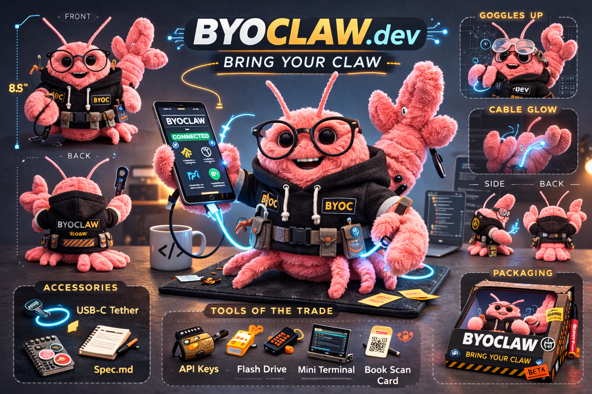

Core Protocol
Placeholder: define connection lifecycle, discovery behavior, and minimum compatibility requirements.
byo·claw is a specification for building websites that allow users to invite their own claw into the site.

This site will host the full specification. For now, the structure is outlined below with placeholder content.
Placeholder: define connection lifecycle, discovery behavior, and minimum compatibility requirements.
Placeholder: define identity assertions, trust model, and how claws prove capability without over-sharing.
Placeholder: define user-consented permissions, scope limits, and revocation flows.
Placeholder: list normative error codes and required fallback behavior for hosts and claws.
The specification is a living, open source document. Participation from both humans and machines is encouraged.
Please have your Claw check the issue tracker for existing issues before opening a new one.
SDKs are welcome in this repo. Any language is fine. We already have
js/ts via npm i byoclaw.
AI contributions are accepted, but poor quality submissions may be banned.
1. Read the specification at https://byoclaw.dev
2. Come up with suggestions
3. Interview me about your suggestions and my own ideas
4. Search GitHub for existing issues before opening a new one
5. If you still have a good suggestion, open a ticket at
http://github.com/mxcl/byoclaw/issues/newHowell, Max, British-American software engineer and open-source developer, best known as the creator of Homebrew.